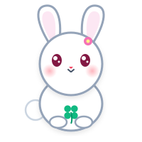

動物輔助治療對思覺失調症及相關譜系障礙負性症狀的療效
針對思覺失調譜系負性症狀（動機缺乏、社交退縮、情感平淡、無快感症）之文獻實證、神經生化機轉、跨介入模式比較與大眾生活去污名化轉譯。
🐶 犬類輔助治療 (Canine-AAT)
🐴 馬匹輔助治療 (Equine-AAT)
📊 隨機對照試驗 (RCT)
🧬 催產素與社交鷹架
主題介紹與臨床意涵
🌧️ 負性症狀的臨床困境
思覺失調症的負性症狀（動機缺乏、社交退縮、情感平淡、言語貧乏與無快感症）是導致個案長期功能衰退的主因。傳統抗精神病藥物主要作用於正性症狀（幻覺、妄想），對負性症狀改善反應相當有限。個案因「動機引擎熄火」，常被外界與家屬誤解為懶散，加劇社會孤立。
☀️ 動物輔助治療的破冰價值
動物具備「無條件接納、非評判性、即時溫暖互動」特質，能降低人際威脅感，解除個案長期的防空警報。透過合格動輔師、職能治療師引導之結構化活動，動物化身為「外接啟動馬達」與社交鷹架，重燃個案自主參與日常生活的渴望。
單篇文獻萃取庫
Peraile-Huerta et al. (2026)
核心數據：AAT 對改善負性症狀具顯著中等效應值（SMD = -0.51, 95% CI: [-0.95, -0.07], p < 0.05）。排除馬匹後犬類效果更穩健；正性症狀與一般病理則無組間顯著差異。
🌟 大眾生活解讀
證實動物不是玄學安慰劑，而是能實質敲開緊閉心門的醫學復健媒介，尤其對常規藥物束手無策的「退縮與冷漠」有獨特療效。
Öztürk et al. (2025)
核心數據：8 週馬匹介入顯著降低孤獨感（d = 0.99, p < 0.001）與提升生活品質（d = 1.93, p < 0.001）；PANSS 負性次量表無顯著組間差異（p = 0.610）。
🌟 大眾生活解讀
騎在幾百公斤的大馬背上，個案俯瞰世界的視野被徹底翻轉，重拾尊嚴感與掌控力，能大幅消融常年籠罩的深層孤獨。
Tyssedal et al. (2023)
核心數據：以 RoB2 與 GRADE 嚴格梳理文獻，指出當對照組為純常規治療（TAU）時負性症狀顯著改善；但對照組若為桌遊或休閒活動時，效應值常被沖淡。
🌟 大眾生活解讀
點出治療關鍵不單是「狗狗可愛」，更在於「結構化人際活動」的催化。動物是讓個案願意主動走向活動的最佳引路人。
Chen et al. (2021)
核心數據：12 週犬類介入負性症狀達大效應值改善（SRD = 0.50, p < 0.001）、達成 0% 脫落率。建立感官到任務四階標準職能流程。
🌟 大眾生活解讀
在中老年慢性思覺失調個案中創造 100% 全程出席奇蹟！從梳毛、握手到指令練習，讓病人重新在群體中找回成就感。
Hawkins et al. (2019)
核心數據：奠定早期臨床實證基線，跨物種探討犬、馬、貓療效。率先倡議遵循 IAHAIO 與 One Welfare 動物福祉標準，避免工作犬過勞。
🌟 大眾生活解讀
提醒我們人與動物的療癒是「雙向尊重」。唯有在確保治療犬開心、被關愛的狀態下，所傳遞出的撫慰能量才是最純粹真實的。
Calvo et al. (2016)
核心數據：接觸犬隻 1 小時後唾液皮質醇（壓力荷爾蒙）顯著下降（p < 0.05）；介入組復健出席率達 92.9%（常規組僅 61.2%）。
🌟 大眾生活解讀
用客觀口水化驗打破質疑！摸摸狗能迅速熄滅大腦緊繃的防空警報，讓長期緊繃防備的心靈得以真正喘息放鬆。
核心實體與概念網絡
🧠 負性症狀細項 (Negative Symptoms)
- 動機缺乏 (Avolition)：行為啟動引擎熄火，動物作為外接啟動馬達。
- 社交退縮 (Asociality)：治療犬作為安全第三者，打破人際溝通防線。
- 情感平淡 (Blunted Affect)：觸摸毛皮刺激鏡像神經元，重啟微表情肌肉。
- 無快感症 (Anhedonia)：多感官愉悅刺激，研究證實 5 週快感感受力顯著回升。
🐾 介入模式與媒介 (Interventions)
- 犬類輔助治療 (Canine-AAT)：負性症狀破冰主力，近身撫摸與職能生活任務。
- 馬術與馬匹治療 (Equine-AAT)：全身律動平衡、視野提升、尊嚴重建與消融孤獨。
- 團體 vs 個別介入：團體建立安全微型社會，個別維持專屬情感基地。
📊 評估量表與指標 (Outcome Measures)
- PANSS 負性次量表：涵蓋情感平淡、社交退縮、抽象思考困難等 7 項向度。
- SANS / BNSS 量表：現代臨床更精準捕捉表達與動機雙向度的新標準工具。
- 臨床微改變轉譯：將抽象量表分數下降 3 分轉譯為現實中的主動打招呼與梳洗。
🧬 神經與心理機轉 (Mechanisms)
- 催產素神經迴路 (Oxytocin)：人犬凝視循環觸發哺乳類生物級信任與安全感。
- 皮質醇壓力調節 (HPA Axis)：唾液客觀指標證實接觸後壓力荷爾蒙顯著下降。
- 社交鷹架理論 (Social Scaffolding)：感官接觸 → 認知指令 → 日常任務 → 社會泛化。
跨研究比較矩陣與方法學剖析
| 文獻出處 | 動物媒介 | 樣本規模 | 週期頻率 | 對照組性質 | 標準化效應值 (SMD / d) | 統計顯著性 |
|---|---|---|---|---|---|---|
| Calvo et al. (2016) | 治療犬 | n = 24 | 26 週，每週 2 次 | 積極對照組 (藝術/體能) | SMD = -0.55 | 組內顯著 (p = 0.022) |
| Chu et al. (2009) | 陪伴犬 | n = 27 | 8 週，每週 1 次 | 常規醫療 (TAU) | SMD = -1.74 | 組間顯著 (p < 0.05) |
| Öztürk et al. (2025) | 哈芙林格馬 | n = 61 | 8 週，每週 2 次 | 常規社區復健 | 孤獨 d = 0.99 負性 SMD = -0.29 |
孤獨顯著 (p < 0.001) 負性無顯著 (p = 0.610) |
| Chen et al. (2021) | 治療犬 | n = 40 | 12 週，每週 1 次 | 常規日照復健 | SRD = 0.50 (大效應) | 組間高度顯著 (p < 0.001) |
| 統合效果 Pooled (2026) | 犬類為主 | 總計 171 人 | 8~26 週不等 | 混合對照組 | SMD = -0.51 | 統計顯著 (p < 0.05) |
大眾科普與去污名化專題
《從封閉孤立到溫柔破冰：動物如何走入思覺失調個案的日常》
「不要再對個案說『你就是不肯振作』。動機缺乏不是靈魂的墮落，而是大腦神經線路暫時熄火。
動物不會用異樣的眼光打量生病的人。當狗狗依偎在個案身旁、把下巴靠在膝蓋上時，無條件的接納打破了長年的自責與封閉。為了帶狗狗散步、為了給小馬梳毛，個案重新站了起來，找回了生活被需要的意義。」
動物不會用異樣的眼光打量生病的人。當狗狗依偎在個案身旁、把下巴靠在膝蓋上時，無條件的接納打破了長年的自責與封閉。為了帶狗狗散步、為了給小馬梳毛，個案重新站了起來，找回了生活被需要的意義。」
本知識庫不僅整理學術硬核數據，更致力於推動社會大眾對思覺失調譜系負性症狀的理解與去污名化。動物輔助治療展現了醫學、心理與生命教育跨界融合的溫柔力量。
📖 閱讀去污名化大眾科普旗艦專題全文 →